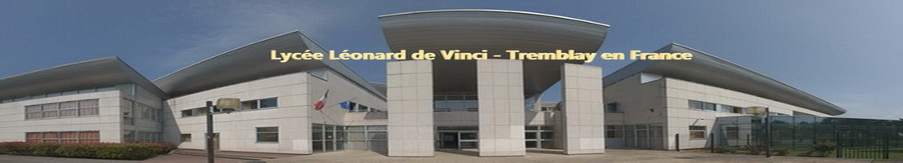

Mon parcours
Dans cette partie je vais vous présenter mon parcours scolaire depuis mon enfance jusqu'à nos jours.
Ecole maternelle
J'ai été à lécole maternelle Sainte Marie située dans le quartier de la Goutte d'Or dans le 18ème arrondissement de Paris. Voici l'histoire de cette école telle qu'elle est racontée sur leur site
"En 1932 cette école voit le jour sous la forme d’un jardin d’enfants ouvert par des religieuses, les Sœurs de St Vincent de Paul. Également, au 50 rue Stéphenson, plusieurs activités vont voir le jour au fil des années : un foyer de jeunes travailleuses, un centre médico-social.
Certaines disparaîtront pour laisser place à d’autres associations hébergées par la communauté religieuse : une PMI, le club personnes âgées, une association permettant le maintien à domicile des malades, une halte garderie, un lieu d’alphabétisation des personnes étrangères.
La vocation de cette maison a toujours été d’être à la disposition des gens du quartier, elle est un point de repère et une mémoire collective pour les familles du quartier.
La communauté se retirera définitivement en 1994, les diverses associations seront pour la plupart réparties sur le quartier et les locaux de la communauté repris par un centre de formation en alternance, avec lequel l’école maternelle cohabite."
Ecole primaire
Je suis ensuite allée à l'école primaire à l'école Saint Bernard dans le même quartier. Je vous propose encore la petite histoire de cette charmante école dans laquelle j'ai passé 2 ans.
"Le 10 août 1858 a été posée la première pierre de l’église Saint Bernard. La cérémonie eu lieu sous la présidence du cardinal Moriot, archevêque de Paris et du Baron Lepic, sous préfet de Saint Denis.
A l’époque, les autorités religieuses et civiles unissaient leurs efforts pour le bien de la population. L’idée d’une école paroissiale germait.
En 1861, l’Église était terminée et ouverte au culte. Le père Baptifolier, curé de Saint Bernard et fils du premier écuyer de Napoléon III, usa de ses hautes relations pour réaliser un projet auquel il tenait beaucoup.
Sur un terrain loué, 6 rue Saint Luc, à son ami Monsieur Daval, il fit construire hâtivement des bâtiments qu’il pensait provisoires.
En 1883, il installa dans une école de six classes les frères des Écoles chrétiennes. C’est avec dévouement et courage (nous étions en pleine laïcisation de l’enseignement) que ces derniers menèrent à bien leur tâche d’instruire et d’éduquer les enfants du quartier. Vint la loi du 7 juillet 1904 qui interdit l’enseignement aux membres des congrégations religieuses.
Les frères de la rue Saint Luc durent quitter leur école et il fallut s’adresser à des maîtres chrétiens mais laïques pour continuer leur œuvre."
Comme je l'ai dit précedemment je n'ai passé que 2 ans à l'école primaire Saint Bernard. Suite à mon déménagement, j'ai terminé mon cursus à l'école Jules Ferry dans la ville où j'habite actuellement.
Collège
Après l'école élémentaire vient le collège. En effet, je suis allée au collège juste à côté le Collège Pierre De Ronsard. C'est là-bas que j'ai fait mes premiers pas dans la section européenne et que j'ai eu mon brevet avec mention très bien.
Lycée
Après l'obtention de mon brevet, je fait mon entrée au Lycée Léonard de Vinci de Tremblay en France. J'ai tout d'abord continué mon parcours dans la section européenne et j'ai choisi la section Scientifique pour mon cursus au lycée ainsi que la spécialité Physique Chimie. J'ai finalement eu mon bac avec mention bien en 2017.

PACES
En 2017/2018 ainsi qu'en 2018/2019 j'ai envisagé un poursuite d'étude en PACES à l'Université Paris Descartes (6ème arrondissement) mais je n'ai pas pu obtenir mon concours. Ces années ne m'ont pas été inutiles, elles me servent pour mon expérience et dans ma méthodologie de travail mais m'ont surtout aidé à grandir.
DUT
Maintenant j'effectue un DUT Informatique à l'IUT Paris Pascartes (16ème arrondissement).